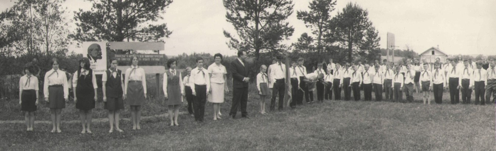

Пионерская дружина имени Лизы Чайкиной
Под руководством пионервожатых участвовала во Всесоюзных пионерских маршах, проводилось много интересных дел, работал Совет Друзей октябрят, проводилась тимуровская работа, интересно проходили сборы дружины, смотры строя и песни, соревнование пионерских отрядов.
